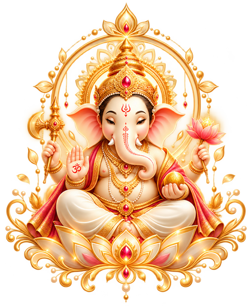

19 November
Mehendi
Colour, music & a little mischief

With hearts full of joy
Request the honour of your presence
Tap to open
Two paths became one.
A secret written in starlight
Scratch the gold from each seal.
Five moments under one moon
Colour, music & a little mischief
A golden afternoon of joy
Under the stars, we dance
The moment we have waited for
One last dance by the lake
Where we'll say “I do”
Beneath still lakes and palace light, we begin forever.
How we found our way
A chance meeting in a small conversation.
Words came easier with each passing minute.
Time slipped past without either of us noticing.
Something shifted in that quiet space.
We fell into long walks after long days.
Shared playlists filled the car on drives home.
Silences became as easy as speaking.
Laughter found us over the smallest things.
Slow mornings became our favourite ritual.
Small acts of care said more than words ever could.
Comfort settled in without trying too hard.
We knew we had found our way home.
On 21 November 2027, we say "I do".
In Udaipur, surrounded by those we love.
We begin our lives as one from that day onward.
With joy, we step into it together.
Us, in pictures
Some moments refuse to stay in the camera roll. These are a few we keep coming back to.
Select a photograph to open it full size.
The wait is almost over
Until the lights come on, the music begins and all our favourite people are in one room.
Until we say “I do” · 21 November 2027
The date is set
21 November 2027